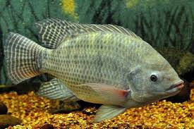

Ikan Mujair

Tahukah kamu bahwa ikan mujair awalnya bukan ikan air tawar? Ikan ini berasal dari laut Afrika dan dikenal dengan nama tilapia sebelum akhirnya dibudidayakan di Indonesia. Selain itu, ikan mujair memiliki kemampuan beradaptasi dengan cepat di habitat baru, baik di perairan tawar maupun pesisir laut. Nama "mujair" sendiri berasal dari Mbah Mudjair, seorang pria asal Blitar yang berhasil membudidayakan ikan ini di air tawar pada tahun 1936.